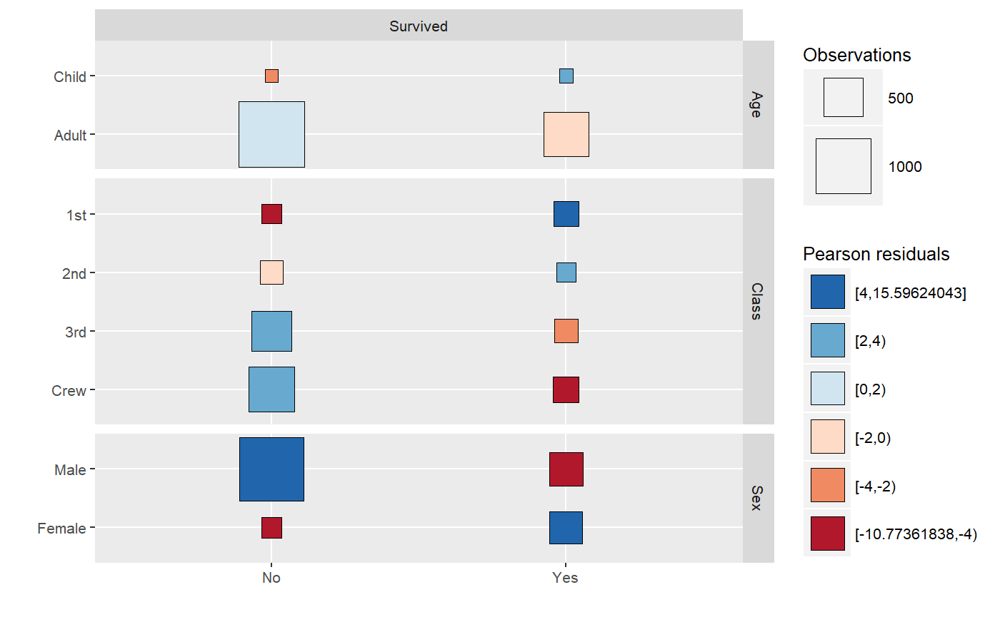
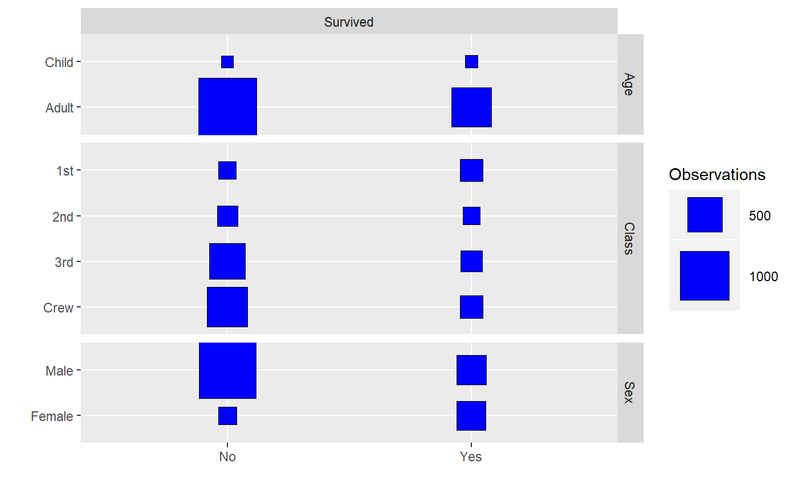
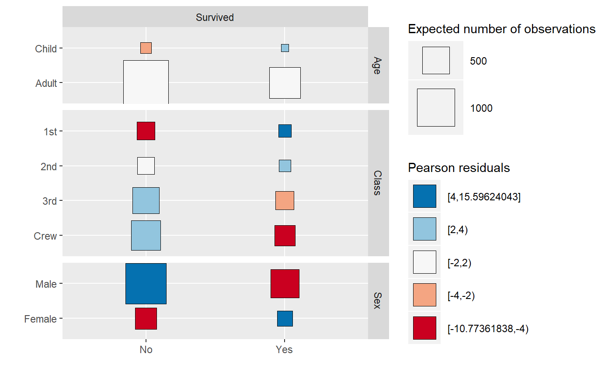
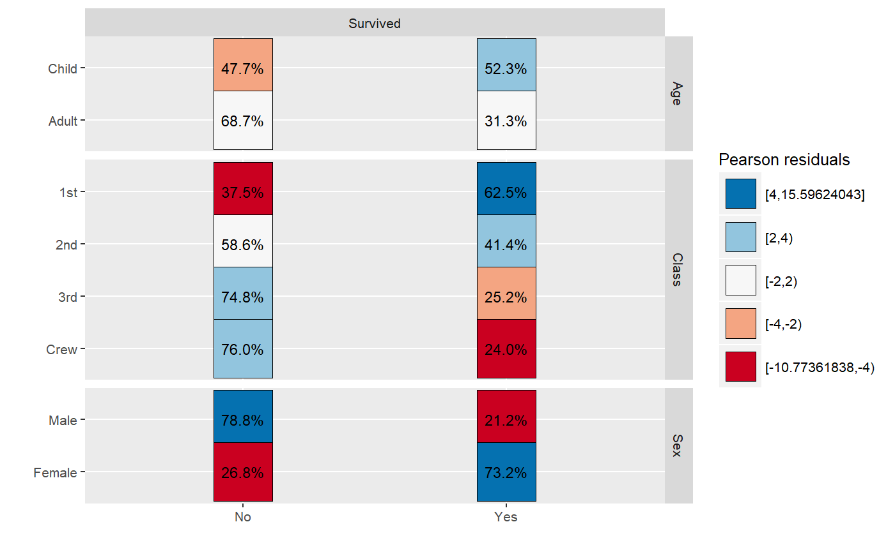
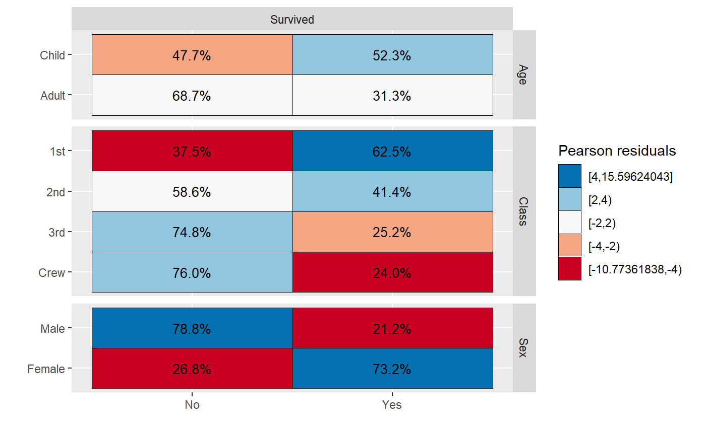

Cross-tabulation matrix plot
A matrix plot of 2x2 cross-tabulated factors
ggcross(formula, data, weight = NULL, fill = "residuals", fill_breaks = c(-4, -2, 2, 4), palette = "RdBu", fill_title = "Pearson residuals", size = "observed", max_size = 20, size_title = "Observations", labels = NULL, labels_size = 3.5, svystatistic = c("F", "Chisq", "Wald", "adjWald", "lincom", "saddlepoint"), return_data = FALSE)
Arguments
| formula | formula of variables to be cross-tabulated, rows on left hand side and columns on the right hand side |
|---|---|
| data | data frame or survey object containing the data |
| weight | optionnal string indicating a column containing weights |
| fill | variable mapped to fill OR color name OR |
| fill_breaks | how to cut fill variable into categories? (cf. |
| palette | Brewer colour palette (see http://colorbrewer2.org) |
| fill_title | legend title for fill |
| size | variable mapped to size OR |
| max_size | size of largest point |
| size_title | legend title for size |
| labels | optionnal cell labels (see examples) |
| labels_size | size of cell labels |
| svystatistic | statistic to be used for survey data (see |
| return_data | return computed data.frame instead of plot? |
Value
a ggplot graphic or a data frame if return_data == TRUE.
Details
By default, the size of squares represents the number of observations while the color represents the chi-squared residuals.
Examples
ggcross(Sex + Age + Class ~ Survived, data = as.data.frame(Titanic), weight = "Freq")ggcross(Sex + Age + Class ~ Survived, data = as.data.frame(Titanic), weight = "Freq", fill_breaks = c(-4, -2, 0, 2, 4))ggcross(Sex + Age + Class ~ Survived, data = as.data.frame(Titanic), weight = "Freq", fill = "blue")ggcross(Sex + Age + Class ~ Survived, data = as.data.frame(Titanic), weight = "Freq", size = "expected", size_title = "Expected number of observations")ggcross(Sex + Age + Class ~ Survived, data = as.data.frame(Titanic), weight = "Freq", labels = "scales::percent(row.prop)", size = NULL)ggcross(Sex + Age + Class ~ Survived, data = as.data.frame(Titanic), weight = "Freq", labels = "scales::percent(row.prop)", size = "raster")ggcross(Sex + Age + Class ~ Survived, data = as.data.frame(Titanic), weight = "Freq", return_data = TRUE)#> row.label col.label observed prop row.prop col.prop expected #> 1 Male No 1364 0.61971831 0.7879838 0.91543624 1171.82644 #> 2 Female No 126 0.05724671 0.2680851 0.08456376 318.17356 #> 3 Male Yes 367 0.16674239 0.2120162 0.51617440 559.17356 #> 4 Female Yes 344 0.15629259 0.7319149 0.48382560 151.82644 #> 5 Child No 52 0.02362562 0.4770642 0.03489933 73.78919 #> 6 Adult No 1438 0.65333939 0.6873805 0.96510067 1416.21081 #> 7 Child Yes 57 0.02589732 0.5229358 0.08016878 35.21081 #> 8 Adult Yes 654 0.29713766 0.3126195 0.91983122 675.78919 #> 9 1st No 122 0.05542935 0.3753846 0.08187919 220.01363 #> 10 2nd No 167 0.07587460 0.5859649 0.11208054 192.93503 #> 11 3rd No 528 0.23989096 0.7478754 0.35436242 477.93730 #> 12 Crew No 673 0.30577010 0.7604520 0.45167785 599.11404 #> 13 1st Yes 203 0.09223080 0.6246154 0.28551336 104.98637 #> 14 2nd Yes 118 0.05361199 0.4140351 0.16596343 92.06497 #> 15 3rd Yes 178 0.08087233 0.2521246 0.25035162 228.06270 #> 16 Crew Yes 212 0.09631985 0.2395480 0.29817159 285.88596 #> residuals stdres row.variable col.variable category #> 1 5.6138652 21.374615 Sex Survived [4,15.59624043] #> 2 -10.7736184 -21.374615 Sex Survived [-10.77361838,-4) #> 3 -8.1268139 -21.374615 Sex Survived [-10.77361838,-4) #> 4 15.5962404 21.374615 Sex Survived [4,15.59624043] #> 5 -2.5365572 -4.577718 Age Survived [-4,-2) #> 6 0.5789980 4.577718 Age Survived [-2,2) #> 7 3.6720027 4.577718 Age Survived [2,4) #> 8 -0.8381763 -4.577718 Age Survived [-2,2) #> 9 -6.6078729 -12.593038 Class Survived [-10.77361838,-4) #> 10 -1.8671586 -3.521022 Class Survived [-2,2) #> 11 2.2899647 4.888701 Class Survived [2,4) #> 12 3.0186112 6.868541 Class Survived [2,4) #> 13 9.5657718 12.593038 Class Survived [4,15.59624043] #> 14 2.7029595 3.521022 Class Survived [2,4) #> 15 -3.3150274 -4.888701 Class Survived [-4,-2) #> 16 -4.3698398 -6.868541 Class Survived [-10.77361838,-4)if (require(survey)) { data(api) dclus1 <- svydesign(id = ~dnum, weights = ~pw, data = apiclus1, fpc = ~fpc) }